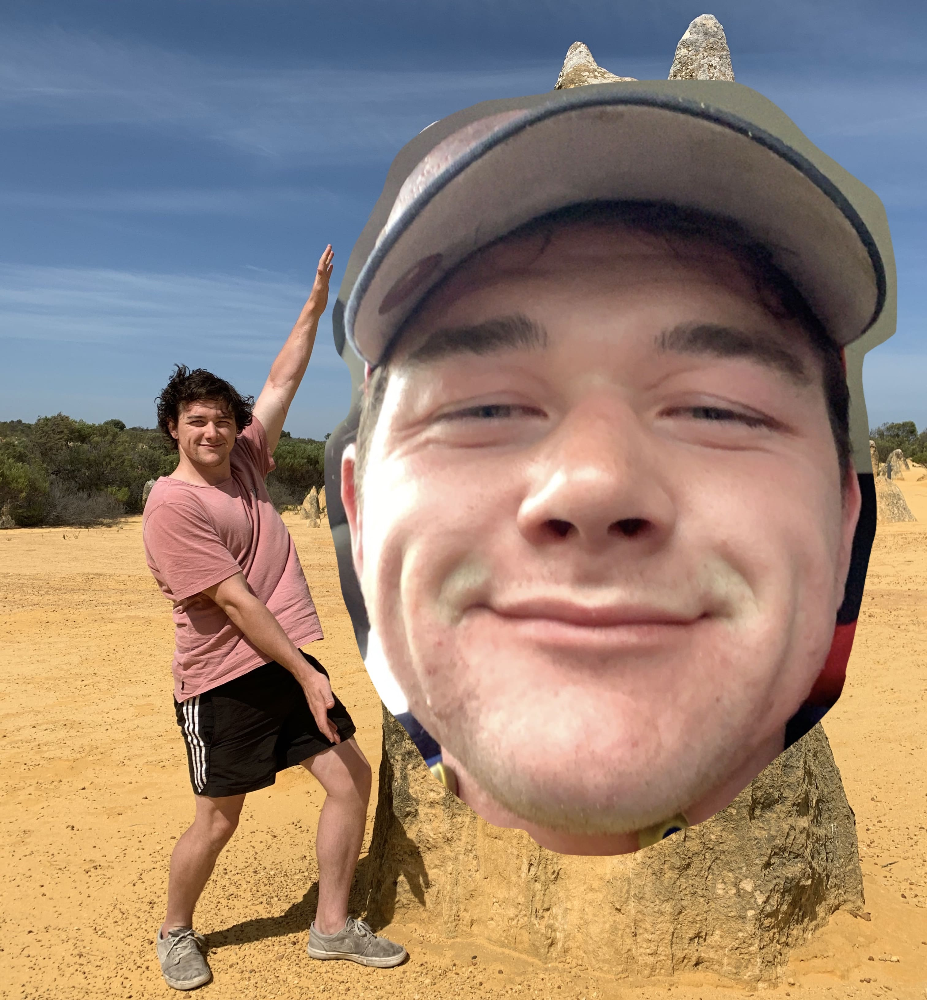

It's
Christmas
Time on the
Farm!
but just a little later than normal...
The Shpeel
Chrismas on the farm is postponed until the 28th of December this year because some of us have mulitple parties we wish to attend, but none of us can teleport or wish to re-enact that hilarious episode of the Vicar of Dibley.
The 28th is tentative atm so if you wish to attend but the postponed date still doesn't work for you then please don't hesitate to call or text the organiser.
How this is gonna go down.
You are welcome to arrive at the farm whenever you wish.
The 27th is buy-all-of-the-food day. If you have any dietary requirements please contact the catering team before this day.
Backed by popular demand and tradition, there will be christmas pudding this year so bring your wits or a mouthguard, we don't care which one.
The exchanging of gifts will happen on the 28th at 5am, sharp.
Uncle Michael's is the venue for the main event.
Viewing of the Vicar of Dibley will be happening around 5pm and dinner will just be the leftovers.
The rest of the day is unplanned as this is not a dictorship and flexability in the schedule allows for spontenaity which is the greatest spice of life.
Countdown!
The countdown to chrissy lunch. The aim is for 12pm but the countdown is for 12:30pm as being on time has never been admin's strong suit don't judge me.
Where it's @
Find some directionThis website was designed and distributed by Kyle Bario. This is him:
He is a keen, eager and up-and-coming fullstack developer hoping to use the power of story through digital media to educate, inspire and help change the world.
If you or anyone else you know is looking for a well made and functional website for personal or business use, please hire him now. He needs money to pay for his course.